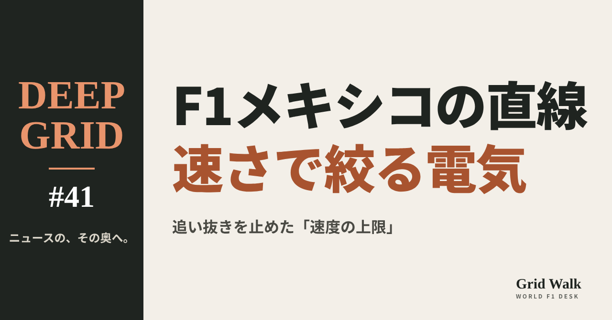
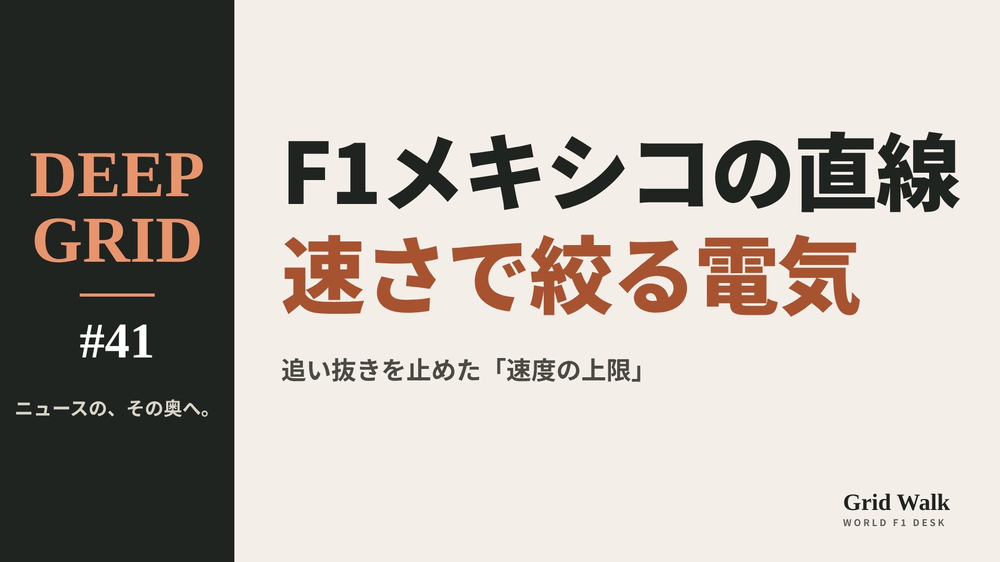
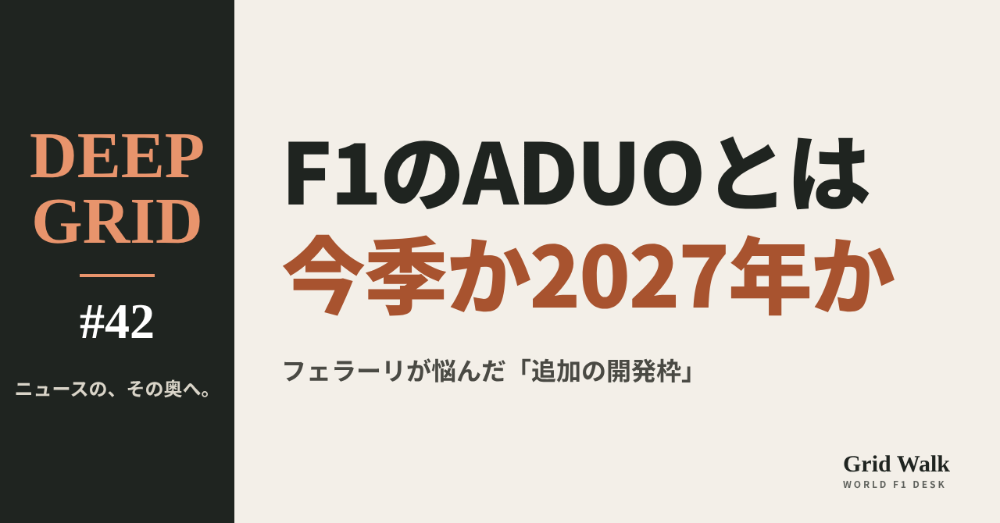
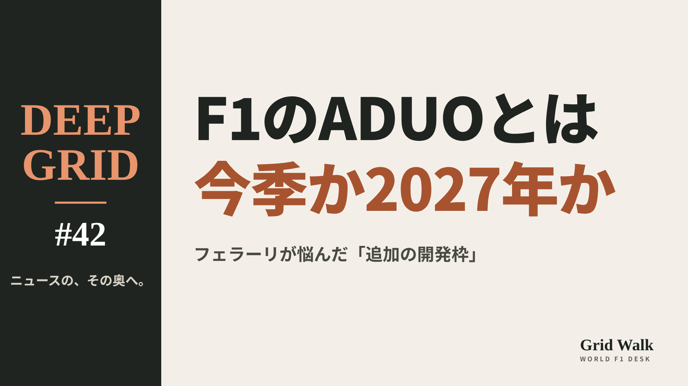

<meta charset="utf-8"><title>DEEP GRID #41・#42 note貼り付け</title>
<style>
/* one column of numbered paste steps; text steps vs image steps differ by marker */
:root{--bg:#F5F4F0;--card:#FFFFFF;--ink:#1D2321;--mute:#5F665F;--line:#DCDAD2;--btn:#1F5FBF;--btnok:#2E8B4F;--img:#E9F3EC;--imgink:#22663B;--sans:'IBM Plex Sans JP','Hiragino Sans','Noto Sans JP',sans-serif}
@media (prefers-color-scheme:dark){:root:not([data-theme="light"]){--bg:#171A19;--card:#202423;--ink:#ECEDE8;--mute:#A3AAA2;--line:#343937;--btn:#4D8BE6;--btnok:#3FA866;--img:#1E2C23;--imgink:#8FD3A6;color-scheme:dark}}
:root[data-theme="dark"]{--bg:#171A19;--card:#202423;--ink:#ECEDE8;--mute:#A3AAA2;--line:#343937;--btn:#4D8BE6;--btnok:#3FA866;--img:#1E2C23;--imgink:#8FD3A6;color-scheme:dark}
body{background:var(--bg);color:var(--ink);font-family:var(--sans);font-size:15px;line-height:1.75;padding:20px 16px 60px}
main{max-width:680px;margin:0 auto;display:grid;gap:28px}
header h1{font-size:22px;margin:0 0 6px;text-wrap:balance}
header p{margin:0;color:var(--mute);font-size:14px}
nav{display:flex;gap:8px;flex-wrap:wrap;margin-top:12px}
nav a{border:1px solid var(--line);border-radius:999px;padding:4px 14px;color:var(--ink);text-decoration:none;font-size:14px;background:var(--card)}
.part h2{font-size:18px;line-height:1.5;margin:0 0 12px;text-wrap:balance;display:flex;gap:10px;align-items:baseline;flex-wrap:wrap}
.tag{font-size:13px;background:var(--ink);color:var(--bg);border-radius:6px;padding:1px 9px}
.steps{list-style:none;margin:0;padding:0;display:grid;gap:12px}
.st{background:var(--card);border:1px solid var(--line);border-radius:12px;padding:12px;min-width:0}
.hd{display:flex;align-items:center;gap:8px;margin-bottom:8px}
.no{width:26px;height:26px;border-radius:50%;background:var(--btn);color:#fff;display:inline-flex;align-items:center;justify-content:center;font-size:13px;font-weight:700;flex:0 0 26px}
.im .no{background:var(--btnok)}
.hd em{font-style:normal;font-size:12px;background:var(--img);color:var(--imgink);border-radius:6px;padding:0 8px}
.bx{font-size:13.5px;line-height:1.7;border:1px solid var(--line);border-radius:8px;padding:8px 10px;max-height:110px;overflow:auto;overflow-wrap:anywhere}
.bx.tall{max-height:150px}.bx p{margin:0 0 6px}.bx h2{font-size:14px;margin:8px 0 4px}.bx a{color:var(--btn)}
.st img{display:block;width:100%;max-width:100%;border:1px solid var(--line);border-radius:8px}
.sub{font-size:12.5px;color:var(--mute);margin:6px 0 0}
.cp{width:100%;margin-top:8px;padding:12px;border:0;border-radius:10px;background:var(--btn);color:#fff;font:600 15px var(--sans);cursor:pointer}
.cp.ok{background:var(--btnok)}.cp.dl{background:var(--btnok)}.cp:focus-visible{outline:3px solid var(--ink);outline-offset:2px}
.xh{font-size:15px;margin:20px 0 10px}
.fb{font-size:13px;line-height:1.7;margin:8px 0 0;padding:8px 10px;border-radius:8px;background:var(--img);color:var(--imgink)}
.opts{display:grid;grid-template-columns:repeat(auto-fill,minmax(240px,1fr));gap:10px}
.opt{min-width:0}.opt img{display:block;width:100%;border:1px solid var(--line);border-radius:8px}
.ol{display:flex;align-items:center;gap:8px;margin-top:6px}.ol b{font-size:13px;flex:0 0 auto}.ol .on{font-size:12.5px;color:var(--mute);flex:1;min-width:0}.ol .cp{width:auto;flex:0 0 auto;padding:9px 14px}.ol .cp{margin:0;padding:9px}
.toast{font-size:13px;color:var(--mute);margin-top:6px}
</style>
<main><header><h1>DEEP GRID #41・#42 note貼り付け</h1><p>2本あります。青い番号は文章、緑は画像です。</p><nav><a href="#p1">#41</a><a href="#p2">#42</a></nav></header><section class="part" id="p1"><h2><span class="tag">DEEP GRID #41</span>なぜメキシコシティGPでは、追い抜きが難しかったのか　速さに応じて絞られる電気の出力【DEEP GRID #41】</h2><ol class="steps">
<li class="st im"><div class="hd"><span class="no">1</span><b>見出し画像</b><em>画像</em></div><button class="cp dl" data-img="img/mexico-no-overtaking.png" data-name="deep-mexico-no-overtaking_見出し画像.png">ダウンロード</button></li>
<li class="st"><div class="hd"><span class="no">2</span><b>タイトル</b></div><div class="bx" id="p1t">なぜメキシコシティGPでは、追い抜きが難しかったのか　速さに応じて絞られる電気の出力【DEEP GRID #41】</div><button class="cp" data-plain="p1t">タイトルをコピー</button></li>
<li class="st"><div class="hd"><span class="no">3</span><b>本文</b></div><div class="bx tall" id="p1r"><p>11月1日のメキシコシティGP。最後の数周、ハミルトンはフェルスタッペンを、ノリスはルクレールを、スリップストリームを使って抜こうとし、オーバーテイクモードも使えたのに、長いメインストレートで前に出られなかった。英The Raceは、原因は薄い空気よりも、速度が上がるほど電気の出力の上限が下がる技術規則の決まりにあると分析した。その仕組みと、メキシコでそれが目立った理由、規則の側の考え方を順に読む。</p><p>データの表と、出典5件はサイトで → <a href="https://f1gridwalk.github.io/deep/mexico-no-overtaking/?utm_source=note&amp;utm_campaign=mexico-no-overtaking">https://f1gridwalk.github.io/deep/mexico-no-overtaking/?utm_source=note&amp;utm_campaign=mexico-no-overtaking</a></p><h2>先に結論</h2><p>① メキシコシティGPはフェルスタッペンが勝ち、2位のハミルトンは0.799秒差だった（F1公式の結果）。The Raceによると、最後の数周、ハミルトンもノリスも、オーバーテイクモードの0.5MJとスリップストリームがありながら、前の車を抜けなかった。</p><p>② The Raceは、原因を技術規則C5.2.8の決まりだとしている。後輪を押すMGU-Kの出力（最大350kW）は、速度が上がると上限が下がる。オーバーテイクモードを使う車では、時速337kmを超えると、1km/h速くなるごとに20kWずつ減る。</p><p>③ メキシコでは、最終盤の「スタジアム区間」を抜けると、すぐ長いメインストレートに出る。The Raceによると、車は電気をたっぷり残したまま直線に入り、早い段階でこの上限に届いた。速いほど電気が削られるので、追う車の速度の差は直線の途中で縮み、車間はほとんど動かなかった。</p><p>④ 規則の側の理由もある。The Raceによると、この上限は、電気の足りない2026年の車の直線での性能の出方を管理し、オーバーテイクモードを使う車に速度の差をつけるための決まりだった。ところがメキシコでは、追い抜きの助けよりも妨げになった。ほかの多くのコースでは、大きく効いていなかったという。</p><p>⑤ The Raceによると、この速度の上限は2027年の規則から消える。次のサンパウロGP（11月6〜8日、インテルラゴス）では、ストレートモードの区間は2カ所だとFIAは発表した（PlanetF1）。</p><p><strong>メキシコの最後の数周、抜けそうで抜けない展開を、どう見ていましたか？</strong></p><h2>続きは F1 Grid Walk で</h2><p>ここから先の「最後の数周、なぜ前に出られなかったのか」「速くなるほど、電気の上限が下がる」「なぜメキシコで、この上限が目立ったのか」「規則の側の理由と、「誰にとっても同じ」という見方」「次のインテルラゴスでは」は、サイトで読めます。MGU-Kの出力の上限と速度（2026年の規則）、最後から2周目のメインストレート（フェルスタッペンとハミルトン）、メキシコシティGP決勝の上位5人（11月1日、71周）、2026年と2027年の比較、インテルラゴスの配置（サンパウロGP）の表も載せています。</p><p><strong>DEEP GRID #41「なぜメキシコシティGPでは、追い抜きが難しかったのか　速さに応じて絞られる電気の出力」</strong></p><p><a href="https://f1gridwalk.github.io/deep/mexico-no-overtaking/">https://f1gridwalk.github.io/deep/mexico-no-overtaking/</a></p><p>━━━━━━━━━━</p><p><strong>F1 Grid Walk では、世界のF1ニュースを毎日日本語でまとめています。</strong></p><p>海外の記事の要約を、毎日載せています。</p><p>ほかの海外記事も読みたい方は、F1 Grid Walkへ。</p><p><a href="https://f1gridwalk.github.io/">https://f1gridwalk.github.io/</a></p><p>━━━━━━━━━━</p><p><a href="https://www.the-race.com/formula-1/the-stupid-speed-limit-that-neutered-mexican-gp-explained/">出典：The Race</a></p><p><a href="https://www.planetf1.com/news/fia-brazilian-grand-prix-2026-interlagos">出典：PlanetF1</a></p><p><a href="https://www.formula1.com/en/results/2026/races/1298/mexico/race-result">出典：F1公式サイト</a></p><p><a href="https://www.formula1.com/en/racing/2026">出典：F1公式サイト</a></p><p><a href="https://www.fia.com/system/files/documents/fia_2026_f1_regulations_-_section_c_technical_-_iss_21_-_2026-10-19.pdf">出典：FIA</a></p></div><button class="cp" data-rich="p1r">本文をコピー</button></li>
<li class="st"><div class="hd"><span class="no">4</span><b>ハッシュタグ</b></div><div class="bx" id="p1h">#F1 #F1jp #メキシコシティGP #ハミルトン #パワーユニット #F1の規則 #DEEPGRID</div><button class="cp" data-plain="p1h">タグをコピー</button></li>
</ol><h3 class="xh">X</h3><ol class="steps">
<li class="st im"><div class="hd"><b>X用の画像</b><em>画像</em></div><button class="cp dl" data-img="img/x_mexico-no-overtaking.png" data-name="x_deep-mexico-no-overtaking.png">ダウンロード</button></li>
<li class="st"><div class="hd"><b>① noteをシェアするときの文</b></div><div class="bx" id="p1x0">メキシコシティGPでは、なぜ追い抜きが難しかったのか。英The Raceは、速度が上がるほど電気の出力の上限が下がる規則が原因だと分析しました。DEEP GRID #41 #F1jp</div><button class="cp" data-plain="p1x0">コピー</button></li>
<li class="st"><div class="hd"><b>② ①への返信</b></div><div class="bx" id="p1x1">ほかの海外記事も読みたい方は、F1 Grid Walkへ。
https://f1gridwalk.github.io/deep/mexico-no-overtaking/?utm_source=x&amp;utm_campaign=mexico-no-overtaking</div><button class="cp" data-plain="p1x1">コピー</button></li>
<li class="st"><div class="hd"><b>③ ②への返信</b></div><div class="bx" id="p1x2">毎日の海外F1ニュースは、日本語でこちらにまとめています。
https://f1gridwalk.github.io/</div><button class="cp" data-plain="p1x2">コピー</button></li>
</ol></section><section class="part" id="p2"><h2><span class="tag">DEEP GRID #42</span>ADUOとは何か　フェラーリはなぜ「今季か2027年か」で悩んだのか【DEEP GRID #42】</h2><ol class="steps">
<li class="st im"><div class="hd"><span class="no">1</span><b>見出し画像</b><em>画像</em></div><button class="cp dl" data-img="img/aduo-explained.png" data-name="deep-aduo-explained_見出し画像.png">ダウンロード</button></li>
<li class="st"><div class="hd"><span class="no">2</span><b>タイトル</b></div><div class="bx" id="p2t">ADUOとは何か　フェラーリはなぜ「今季か2027年か」で悩んだのか【DEEP GRID #42】</div><button class="cp" data-plain="p2t">タイトルをコピー</button></li>
<li class="st"><div class="hd"><span class="no">3</span><b>本文</b></div><div class="bx tall" id="p2r"><p>2026年の新しいパワーユニットで出遅れたメーカーには、FIAが追加の改良とお金の枠を与える。それがADUOだ。フェラーリは最大の枠をもらったが、今季の2回の改良は「限られた一歩」だったと英The Raceは書く。バスール代表は、6月と9月の新エンジンと2027年のエンジンを並行しては作れなかったと話し、ADUOを「少し倒錯した道具」と呼んだ。仕組みの中身、今季どのメーカーが何を得たのか、代表の話、そして「遅れたメーカーへの救済は公平か」という反対の声から、この仕組みを読む。</p><p>データの表と、出典15件はサイトで → <a href="https://f1gridwalk.github.io/deep/aduo-explained/?utm_source=note&amp;utm_campaign=aduo-explained">https://f1gridwalk.github.io/deep/aduo-explained/?utm_source=note&amp;utm_campaign=aduo-explained</a></p><h2>先に結論</h2><p>① ADUOは、2026年の新しいパワーユニットで遅れたメーカーに、FIAが追加の改良（アップグレード）の回数と、予算上限の余裕を与える仕組みだ。測るのはICE（内燃エンジン）の性能だけで、いちばん良いメーカーとの差が2％以上なら対象になる。</p><p>② 1回目の評価（開幕からカナダまでの5戦）では、レッドブル・フォードのエンジンが基準とされた。メルセデスは2％以上の差で今季1回・来季1回、フェラーリ、ホンダ、アウディは4％以上の差で今季2回・来季2回の改良を得た（英The Race、英Sky Sports）。8月の2回目の評価では、変わったメーカーはなかった。</p><p>③ フェラーリは最大の2回をもらい、オーストリア（6月末）とイタリア（9月）で入れた。英The Raceはこれを「限られた一歩」と書いている。バスール代表は伊Automoto.itに、6月の新エンジン、9月の新エンジン、2027年のエンジンの3つは、予算上限と人手のために並行しては作れず、何かを犠牲にしなければならなかったと話した。</p><p>④ お金の重さもある。代表によると、新しいエンジンは最初の1基だけで150万ドルかかり（The Race）、新しいエンジンを台に載せると、その費用はADUOでもらえる追加の予算とほぼ同じになる（The Race、Automoto.it）。代表は、ADUOを「少し倒錯した道具」と呼んでいる（Automoto.it）。</p><p>⑤ 反対の声もある。基準とされたレッドブルは測り方に異議を唱え、元王者のジャック・ヴィルヌーヴは「あるチームは良くしてよくて、あるチームはだめ」というルールは好きではないと話した。FIAは、ADUOは性能をそろえる仕組みではなく「コストキャップの救済の仕組み」だと説明している。</p><p><strong>遅れたメーカーに追加の開発枠を与えるADUO、公平だと思いますか？</strong></p><h2>続きは F1 Grid Walk で</h2><p>ここから先の「ADUOは、何をする仕組みなのか」「今季、だれが、いつ、何を得たのか」「フェラーリは、6月・9月・2027年のどれを選んだのか」「遅れたメーカーへの救済は、公平なのか」は、サイトで読めます。ADUOの段階（差に応じて得られるもの）、評価の期間（2026年）、2026年、メーカーごとのADUO、フェラーリが比べた3つの道（バスール代表の話から）、年表の表も載せています。</p><p><strong>DEEP GRID #42「ADUOとは何か　フェラーリはなぜ「今季か2027年か」で悩んだのか」</strong></p><p><a href="https://f1gridwalk.github.io/deep/aduo-explained/">https://f1gridwalk.github.io/deep/aduo-explained/</a></p><p>━━━━━━━━━━</p><p><strong>F1 Grid Walk では、世界のF1ニュースを毎日日本語でまとめています。</strong></p><p>海外の記事の要約を、毎日載せています。</p><p>ほかの海外記事も読みたい方は、F1 Grid Walkへ。</p><p><a href="https://f1gridwalk.github.io/">https://f1gridwalk.github.io/</a></p><p>━━━━━━━━━━</p><p><a href="https://www.automoto.it/formula1/ferrari-vasseur-col-senno-del-poi-avrei-fatto-tutto-in-modo-diverso-e-sul-motore-ammette-sapevamo-da-anni-di-essere-in-ritardo.html">出典：Automoto.it</a></p><p><a href="https://www.the-race.com/formula-1/why-ferrari-engine-weakness-hides-vasseurs-biggest-success/">出典：The Race</a></p><p><a href="https://www.fia.com/system/files/documents/fia_2026_f1_regulations_-_section_e_financial_-_pu_manufacturers_-_iss_05_-_2026-05-07.pdf">出典：FIA</a></p><p><a href="https://www.fia.com/news/power-ups-how-f1s-additional-development-upgrade-opportunities-will-be-applied-and-whats">出典：FIA</a></p><p><a href="https://www.formula1.com/en/latest/article/explained-what-is-f1s-aduo-engine-upgrade-system-and-how-will-it-work.2A67N47ntcdQbKhHOd7GdD">出典：Formula 1 公式</a></p><p><a href="https://the-race.com/formula-1/f1-engine-upgrades-first-2026-fia-decision-revealed/">出典：The Race</a></p><p><a href="https://www.skysports.com/f1/news/12040/13551591/aduo-in-f1-red-bull-eng">出典：Sky Sports</a></p><p><a href="https://racingnews365.com/controversial-aduo-ruling-could-have-far-reaching-consequences">出典：RacingNews365</a></p><p><a href="https://www.grandprix247.com/formula-1-news/is-the-aduo-the-right-approach-for-formula-1-in-2026">出典：GrandPrix247</a></p><p><a href="https://sportsnaut.com/f1/ferrari-aduo-engine-upgrade-austrian-grand-prix-2026">出典：Sportsnaut</a></p><p><a href="https://www.motorsportmagazine.com/articles/single-seaters/f1/aduo-how-f1-will-unlock-engine-upgrades-so-strugglers-can-catch-up/">出典：Motorsport Magazine</a></p><p><a href="https://www.the-race.com/formula-1/red-bull-misses-out-as-fia-reveals-fresh-f1-aduo-results/">出典：The Race</a></p><p><a href="https://www.gpblog.com/en/breaking-news/major-engine-upgrade-boost-to-mercedes-ferrari-audi-and-honda">出典：GPblog</a></p><p><a href="https://www.the-race.com/formula-1/mercedes-rolls-back-aduo-engine-debut/">出典：The Race</a></p><p><a href="https://www.planetf1.com/news/audi-f1-2027-engine-upgrade-delay">出典：PlanetF1</a></p></div><button class="cp" data-rich="p2r">本文をコピー</button></li>
<li class="st"><div class="hd"><span class="no">4</span><b>ハッシュタグ</b></div><div class="bx" id="p2h">#F1 #F1jp #フェラーリ #ADUO #パワーユニット #F1の規則 #DEEPGRID</div><button class="cp" data-plain="p2h">タグをコピー</button></li>
</ol><h3 class="xh">X</h3><ol class="steps">
<li class="st im"><div class="hd"><b>X用の画像</b><em>画像</em></div><button class="cp dl" data-img="img/x_aduo-explained.png" data-name="x_deep-aduo-explained.png">ダウンロード</button></li>
<li class="st"><div class="hd"><b>① noteをシェアするときの文</b></div><div class="bx" id="p2x0">遅れたメーカーに追加の開発枠を与えるADUO。フェラーリのバスール代表は「少し倒錯した道具」と呼び、6月・9月・2027年の3択で悩んだと話しました。DEEP GRID #42 #F1jp</div><button class="cp" data-plain="p2x0">コピー</button></li>
<li class="st"><div class="hd"><b>② ①への返信</b></div><div class="bx" id="p2x1">ほかの海外記事も読みたい方は、F1 Grid Walkへ。
https://f1gridwalk.github.io/deep/aduo-explained/?utm_source=x&amp;utm_campaign=aduo-explained</div><button class="cp" data-plain="p2x1">コピー</button></li>
<li class="st"><div class="hd"><b>③ ②への返信</b></div><div class="bx" id="p2x2">毎日の海外F1ニュースは、日本語でこちらにまとめています。
https://f1gridwalk.github.io/</div><button class="cp" data-plain="p2x2">コピー</button></li>
</ol></section></main><script>
function done(b,msg){const t=b.dataset.t||b.textContent;b.dataset.t=t;b.classList.add('ok');b.textContent=msg||'コピーしました';setTimeout(()=>{b.classList.remove('ok');b.textContent=t},2000)}
function selectEl(el){const r=document.createRange();r.selectNodeContents(el);const s=getSelection();s.removeAllRanges();s.addRange(r)}
async function rich(el,b){
  try{await navigator.clipboard.write([new ClipboardItem({'text/html':new Blob([el.innerHTML],{type:'text/html'}),'text/plain':new Blob([el.innerText],{type:'text/plain'})})]);done(b);return}catch(e){}
  selectEl(el);let ok=false;try{ok=document.execCommand('copy')}catch(e){}
  if(ok){getSelection().removeAllRanges();done(b)}else{done(b,'選択しました。コピーしてください')}}
async function plain(el,b){
  try{await navigator.clipboard.writeText(el.innerText);done(b);return}catch(e){}
  selectEl(el);let ok=false;try{ok=document.execCommand('copy')}catch(e){}
  if(ok){getSelection().removeAllRanges();done(b)}else{done(b,'選択しました。コピーしてください')}}
let dlns=null;(async()=>{try{dlns=await window.claude?.use?.("downloads")}catch(e){dlns=null}})();
async function img(src,b){
  b.dataset.t=b.dataset.t||b.textContent;
  if(!dlns){try{dlns=await window.claude?.use?.("downloads")}catch(e){}}
  if(!dlns){b.textContent='ダウンロードできませんでした';setTimeout(()=>{b.textContent=b.dataset.t},3500);return}
  try{const blob=await fetch(src).then(r=>r.blob());b.textContent='保存の確認を開いています…';
    await dlns.save({filename:b.dataset.name,data:blob});done(b,'ダウンロードしました')}
  catch(e){const c=e&&e.code;b.textContent=c==='declined'?'キャンセルしました':c==='rate_limited'?'少し待ってからもう一度押してください':'ダウンロードできませんでした';setTimeout(()=>{b.textContent=b.dataset.t},3500)}}
document.querySelectorAll('.cp').forEach(b=>b.addEventListener('click',()=>{
  if(b.dataset.rich)rich(document.getElementById(b.dataset.rich),b);
  else if(b.dataset.plain)plain(document.getElementById(b.dataset.plain),b);
  else img(b.dataset.img,b)}));
</script>